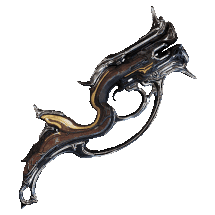

Steel Path Weapons
Focus on a small pool of well-modded weapons.
Do the Steel Path circuit to get Incarnons (with decrees and in group it happens early), or Liches for some weapons. Outside of the circuit, Incarnon weapons from Zariman are also very good.
Recommended Weapons
Classified by Mastery Rank (MR) for better readability. Does not indicate power but only the level required to access.
MR requirement can be misleading
- kitguns require reputation
- Incarnon adapters require access to the SP Circuit
- Lich Kuva/Tenet weapons
- Lich Kuva/Tenet "direct reward" weapons (via Foundry and not an in-game shop) ignore MR requirements, only need MR 5 + War Within + Rising Tide
- Lich Kuva/Tenet shop weapons have normal MR requirements
-
primaries:
- MR 0+: Nataruk, Kitgun Vermisplicer+Brash+Splat, Kitgun Vermisplicer+Brash/palmaris+macro thymoid
- MR 4: Torid Incarnon
- MR 5: Tenet Arca Plasmor, Tenet Glaxion
- MR 8: Acceltra, Cedo
- MR 9: Phantasma non-Prime, Ignis Wraith
- MR 11: Boar Prime incarnon
- MR 10: Latron Prime incarnon
- MR 12: Burston Prime incarnon
- MR 14: Acceltra Prime, Phenmor, Felarx, Phantasma Prime
- MR 15: Cedo Prime
- MR 17: Coda Bassocyst
-
secondaries:
- MR 0+: Kitgun (Sporelacer+Haymaker+Splat)
- MR 2: Furis Incarnon
- MR 5: Kuva Nukor (progenitor Magnetic or Fire), Tenet Cycron** Fire, Tenet Plinx
- MR 8: Ocucor (requires augment mod), Lex Prime Incarnon
- MR 11: Dual Toxocyst Incarnon
- MR 14: Laetum, Epitaph Prime (primary fire = AoE, charged fire = nuclear bomb)
-
melee: (arcanes Melee Influence / Melee Exposure if in doubt)
- MR 6: Dual Ichor Incarnon, Broken War, Xoris (glaive explosion)
- MR 8: Falcor (glaive bounce)
- MR 9: Lesion
- MR 10: Harmony, Glaive Prime (glaive explosion)
- MR 12: Guandao Prime, Thalys Incarnon, Okina Prime Incarnon, Orthos Prime
- MR 14: Praedos Incarnon
Incarnons
All Incarnons have potential, but some are more effective in the current state of the game and/or more enjoyable to play in general.
checklist MANDATORY prerequisites to get an Incarnon weapon
- Zariman Incarnons: quest Angels of the Zariman
- Sanctum Incarnons: quest Whispers in the Walls + Deadlock Protocol
- Duviri Incarnons: quest Duviri Paradox + SteelPath
Priority Incarnons
In doubt, choose the following Incarnons:
- native (without adapter):
- primaries / secondaries from Zariman: Felarx, Phenmor, Laetum
- melee:
- Zariman: Praedos (especially for speed, DPS OK), Innodem (decent)
- Duviri: Thalys (good range / Influence combo)
- adapters in the Steel Path Duviri Circuit (SP circuit tip: get a weapon (melee priority) with Condition Overload or Galvanized Shot/Aptitude and take elemental damage decrees):
- primaries / secondaries: Torid, Dual toxocyst, Furis, Burston, Boar, Lex Prime
- melee: Dual Ichor, Okina Prime, Nami Solo, Hate, Bo Prime, Magistar
Steel Path Circuit: Priority Incarnon weapons by weekly rotation
- week 1: Lato, Paris
- week 2: Boar, Angstrum
- week 3: Furis, Latron, Strun, Bo
- week 4: Magistar, Lex, Boltor
- week 5: Torid, Dual Toxocyst, Dual Ichor, Miter
- week 6: Burston, Nami Solo, Vasto
- week 7: Hate, Dread
- week 8: Okina, Dera, Sybaris, Sicarus
Adapter Weapon Choices
Adapters are compatible with multiple weapons, bonuses are slightly different per weapon. Refer to respective weapon pages via Incarnon details
Primary Adapters
- prime: Boar, Boltor, Braton, Gorgon, Latron, Paris, Strun, Sybaris
- vandal: Dera
- prisma: Gorgon
- no choice: Dread, Miter, Torid
Secondary Adapters
- prime: Bronco, Lato (Founder), Lex, Sicarus, Vasto, Zylok
- normal (non mk-1): Furis
- prisma: Angstrum
- synoid: Gammacor
- vandal: Lato
- no choice: Atomos, Cestra, Despair, Dual Toxocyst
Melee Adapters
- prime: Bo, Okina, Skana (Founder)
- normal: Magistar (not Sancti)
- wraith: Furax
- prisma: Skana
- no choice: Ack & Brunt, Anku, Ceramic Dagger, Dual ichor, Hate, Nami Solo, Sibear
Lich Weapons
Many possible weapons, some more fun than others. 3 different types of Liches currently:
- Grineer: Kuva Lich
- Corpus: Sister of Parvos
- Infested: Technocyte Coda
checklist MANDATORY prerequisites to get a Lich
- be MR 5 (since Update 35 of 2023)
- have done War Within + Rising Tide
- not have an active lich (only one at a time)
- to check: go in game menu and see bottom right if you have a red/blue/green button next to your Nightwave
Displayed MR requirement vs real
There are 2 types of Lich weapons:
- Lich weapons obtained from Foundry after battle (Kuva + Tenet)
- ignore MR requirements, only need MR 5 + War Within + Rising Tide
- Lich weapons obtained from in-game shops with tokens (Coda weapons + Tenet from Ergo Glast)
- follow normal MR requirement rules to obtain the weapon
- at MR 16 you have unlocked all Tenet from Ergo Glast (MR 14 to 16 depending on weapons)
- at MR 17 you have unlocked all Coda from Eleanor (MR 17 for all)
- follow normal MR requirement rules to obtain the weapon
Status / Progenitors
Lich weapons benefit from a damage/status bonus from +20 to +60%, whose status is determined by the frame that generated the Lich (larva, candidate...). We call this frame the progenitor.
Status Types
See Progenitor list for details. Example: use Saryn for a toxin weapon, Nezha for a fire weapon, Mesa for a magnetic weapon.
These status are less critical to create a weapon than in the past: they can be changed with an Elemental Vice.
Optimal Status: Kuva / Tenet
See the list of recommended status.
Optimal Status: Coda
Can change according to meta/knowledge state, just for reference:
- primaries:
- Bassocyst: Cold/Fire (make Blast)
- Hema: Magnetic
- Sporothrix: Elec (goal: Blast + Elec)
- Synapse: Fire (goal: Corro / Blast or Corro/Fire)
- secondaries:
- Tysis: Magnetic
- Pox: Cold (goal: Corro / Blast with Primed Heated Charge)
- Dual Coda Torxica: Elec OR Fire (goal: Viral Fire, Elec Viral)
- Catabolyst: Fire (goal: Corro+Fire+Viral)
- melee:
- Pathocyst: Elec (Blast + Elec Influence)
- Mire: Elec (Gas+Elec Influence) or Fire (Gas Afflictions)
- Hirudo: Elec (Viral+Elec Influence)
- Caustacyst: Elec (Viral+Elec Influence)
- Motovore: Impact (Corro Exposure) or Elec (Influence)
Status Percentages
For shop weapons (Coda, Tenet from Ergo Glast), to reduce the number of fusions before max, target weapons with the following %:
- directly 60% (nice)
- 52.8% (just 1 fusion before max)
- 48% (2 fusions before max)
Lich Weapon Choices
Essentials are in recommended weapons.
Kuva Weapons (Grineer)
Kuva Weapons by priority order
- priority: Kuva Nukor
- niche meta: Kuva Hek, Kuva Ogris, Kuva Sobek, Kuva Zarr, Kuva Bramma
- niche non-meta: Kuva Kohm, Kuva Hind, Kuva Quartakk, Kuva Tonkor, Kuva Chakkhurr
- others: Kuva Drakgoon, Kuva Hind, Kuva Karak, Brakk, Kraken, Seer, Twin Stubbas, Grattler, Kuva Shildeg, Kuva Ayanga
Tenet Weapons (Corpus)
Add Tenet weapons available via Holokeys from Ergo Glast in relay, Holokeys obtainable by doing Railjack fissures, noted with a * star
Tenet Weapons by priority order
- priority: Tenet Arca Plasmor, Tenet Glaxion, Tenet Cycron
- niche meta: Tenet Plinx, Tenet Diplos
- niche non-meta: Tenet Flux Rifle, Tenet Tetra, Tenet Detron, Tenet Envoy, Tenet Exec*
- others: Tenet Spirex, Tenet Agendus, Tenet Livia, Tenet Grigori, Tenet Ferrox
Coda Weapons (Infested)
Coda Weapons by priority order
- priority: Coda Bassocyst
- niche meta: Coda Hema, Coda Synapse, Coda Tysis, Coda Pathocyst, Dual Coda Torxica
- niche non-meta: Coda Sporothrix, Coda Pox, Coda Mire, Coda Hirudo
- others: Coda Catabolyst, Coda Caustacyst, Coda Motovore
Getting Lich Weapons
Grineer Liches (Kuva)
- be MR5 minimum, have done The War Within
- spawn a Kuva Larvling in Grineer missions lvl 20+, preferably solo on Cassini (Saturn)
- missions to do are:
- level 55 to 110 depending on your lich level
- locations: Earth, Mars, Ceres, Sedna, Kuva Fortress (missions + Requiem relics)
- do Lich-infested missions in public preferably (allies help advance Requiem word discovery)
- weapon level requirement is ignored
- requires opening Requiem relics obtained by killing thralls from the lich in mission (or doing Kuva Siphon alerts) to get Requiem mods
- requires equipping 3 Requiem mods on your Parazon (bottom of Arsenal), to test and find the right combination of 3 mods to defeat the lich (Requiem strategy guide)
- once the right combination is found, beat the lich in Railjack mission on Saturn Proxima. Use Revenant and/or Silence and a fast-firing weapon (Dual Toxocyst Incarnon) to make it easier. Kill the lich to get the weapon.
graph TB
A[MR 5 + War Within + Railjack Intrinsic 5] --> B{Lich active?}
B --> |No| C{Desired status known?}
C --> |No| D[Check progenitor list]
C --> |Yes| E[Cassini, Saturn, Solo]
E --> F[Capture then 10+ kills]
F --> G[Kuva Larvling appears]
G --> H{Desired weapon?}
H --> |No| I[Extract]
H --> |Yes| J[Capture Larvling]
I --> E
B --> |Yes| AA{Requiem mods owned?}
AA --> |No| AB[Farm Requiem relics]
AB --> AC[Kuva Flood / Purchases / Lich thralls]
AC --> AB
AA --> |Yes| AE[Equip 3 random Requiem mods]
AE --> AF{Combination known?}
AF --> |No| AG[Lich missions]
AG --> AJ[Kill thralls / Identify 1st word]
AJ --> AK[Word identified at start of Parazon]
AK --> AL[Test on lich]
AL --> AM{Word validated?}
AM --> |No| AN[Change word position]
AM --> |Yes| AO[Keep valid word in place]
AN --> AP[Move to next word]
AO --> AP
AP --> AF
AF --> |Yes| AQ[Kill lich Railjack Saturn]Corpus Liches (Sisters of Parvos / Tenet)
- be MR5 minimum, have done The War Within and Call of the Tempestarii
- spawn a Candidate
- do Hydra (Pluto), during the mission get a Granum Void Crown from a Treasurer
- redo Hydra (Pluto) solo preferably (lowers Granum Void difficulty)
- give the crown to a big golden hand statue (Golden Hand Tribute)
- beat at least tier 1 in the Granum Void.
- Use AoE (mesa/octavia = easy, AoE weapon on a ledge...)
- or Xoris
- missions to do are:
- level 55 to 110 depending on your lich level
- locations: Venus, Phobos, Jupiter, Neptune, Pluto (+Kuva Fortress to open your Requiem relics)
- do Lich-infested missions in public preferably (allies help advance Requiem word discovery)
- weapon level requirement is ignored
- requires opening Requiem relics obtained by killing thralls from the lich in mission (or doing Kuva Siphon alerts) to get Requiem mods
- requires equipping 3 Requiem mods on your Parazon (bottom of Arsenal), to test and find the right combination of 3 mods to defeat the lich (Requiem strategy guide)
- once the right combination is found and antivirus at 100%, beat the lich in Railjack mission on Neptune Proxima. Use Revenant and/or Silence and a fast-firing weapon (Dual Toxocyst Incarnon) to make it easier. Kill the lich to get the weapon.
graph TB
A[MR 5 + War Within + Railjack Intrinsic 5] --> B{Lich active?}
B --> |No| C{Desired status known?}
C --> |No| D[Check progenitor list]
C --> |Yes| E[Hydra, Pluto, Solo]
E --> F[Locate Golden Hand statue]
F --> G[Use Granum Void Crown]
G --> H[Complete at least tier 1/3]
H --> I[Finish capture + kill Treasurer]
I --> J[Candidate appears]
J --> K{Desired weapon?}
K --> |No| L[Extract]
K --> |Yes| M[Capture Candidate]
L --> E
B --> |Yes| AA{Requiem mods owned?}
AA --> |No| AB[Farm Requiem relics]
AB --> AC[Kuva Flood / Purchases / Lich thralls]
AC --> AB
AA --> |Yes| AE[Equip 3 random Requiem mods]
AE --> AF{Combination known?}
AF --> |No| AG[Lich missions]
AG --> AJ[Kill thralls / Identify 1st word]
AJ --> AK[Word identified at start of Parazon]
AK --> AL[Test on lich]
AL --> AM{Word validated?}
AM --> |No| AN[Change word position]
AM --> |Yes| AO[Keep valid word in place]
AN --> AP[Move to next word]
AO --> AP
AP --> AF
AF --> |Yes| AQ[Kill lich Railjack Neptune]Infested Liches (Coda)
- no MR minimum, must have done the Hex quest (last main quest currently).
- MR 17 required to buy Coda weapons
- missions are 1999 Höllvania missions:
- spawn the lich by doing a quick mission (Legacyte Harvest), preferably solo
- do tier 7 bounties to drop Antivirus mods
- do 1999 nodes marked with green outline with tentacles, attack and use Parazon on liches to test your Antivirus
- only need 1 valid Antivirus to beat a lich, can test 3 at a time then change useless ones for Potency mods to boost antivirus
- once the right combination is found, beat the lich in Railjack mission on Earth Proxima. Use Revenant and/or Silence and a fast-firing weapon (Dual Toxocyst Incarnon) to make it easier. Kill the lich to get the weapon.
graph TB
A[Access Hex] --> B{Antivirus owned?}
B --> |No| C[Bounty Antivirus]
C --> B
B --> |Yes| D{Lich Coda active?}
D --> |No| E[Capture Legacyte Solo]
E --> F[Pick up Yellow Mixtape]
F --> G[Bring Mixtape to terminal]
G --> D
D --> |Yes| H{Antivirus identified?}
H --> |No| I[Equip 3 Antivirus]
I --> J[1999 Coda missions]
J --> K[Test Antivirus on Lich]
K --> H
H --> |Yes| L[Equip 1 Antivirus + 2 Potency]
L --> M[Antivirus 100%]
M --> N[Kill Licher Railjack Earth]
N --> O[MR17, Buy weapons from Eleanor]Priming
Priming consists of "preparing" enemies with a status source so that another damage weapon benefiting from this status can destroy it even more powerfully just after. Big damage boost potential, can help pass a threshold (Steel Path trash mobs, mini-bosses like Demolysts in Disruption).
Also see interaction with CO / GunCO mods (condition overload/status overload, Galvanized Shot, Galvanized Aptitude).
Primers: Examples
- secondary weapons: Epitaph, Kompressa (Prime), (Coda) Tysis...
- primaries: Cedo Prime, Bubonico...
- companion:
- Diriga (see Companions)
- Sentinel / Moa + Tazicor (mini Nukor) + Duplex Bond
Primers: Stats to look for
- multishot
- fire rate
- status chance
- status effect:
- base:
- Viral / Magnetic (single 1999 mod): increases damage to health / shields & overguard
- Corro / Fire: reduces enemy armor
- bonus: Radiation (single Entrati/Deimos lab mod): random control + adds a status via single mod for CO/GunCo
- others:
- Cold: slows Demolysts + increases crit damage received (+0.5 crit multiplier at 9 stacks)
- Puncture: reduces enemy damage (80% reduction at 5 stacks) + increases final crit chance received (+25% at 5 stacks)
- arcanes: Secondary Encumber
- base: